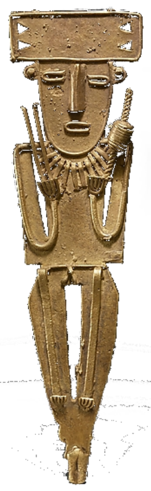

Es importante saber que en la lengua Muysca no existe el numero cero. a continuacion aprenderan los numeros del 1 al 10 y luego los numeros de 11 al 20, se daran cuenta que los numeros desde los 11 indican con la palabra "Quihicha" que significa "pie" en Muysca, como si empezaran a contar con los desdos de los pies.